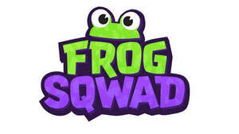

Trade Mark Journal No.2025/049 5 December 2025
UK00004295151 14 November 2025 (9,16,21,25,28,41)

- Class 9
- Games software; video game software; computer game software; games software for PCs; games software for games consoles; downloadable computer and video game software; recorded computer and video game software; application game software; video and computer games in the form of computer programs recorded on data carriers; software for playing video games, computer games and online games; video and audio games software; computer game applications adapted for use on mobile phones and tablets; interactive and multimedia computer game software; multiplayer video and computer games; computer game software for mobile phones; audio visual games on computer hardware platforms; downloadable computer and video game software via a global computer network and wireless devices; downloadable game software for computers, mobile phones, tablets and other electronic devices; games software for use with video game consoles; downloadable electronic publications related to computer games and video games, including newsletters, instruction manuals, user guides and playbooks; computer and video game hardware; entertainment software featuring games; computer software platforms for playing games or social networking; decorative magnets; animation software; cases, covers and accessories for mobile phones, laptops, tablets and other handheld electronic devices; virtual reality software; parts, fittings and accessories for the aforesaid goods.
- Class 16
- Printed matter; flyers; brochures; booklets; manuals; books; posters; art prints; graphic prints; magazines; comics; newsletters; greetings cards; notebooks; postcards; trading cards; collectible cards; collectible trading cards; rulebooks; playbooks; guidebooks; strategy books; stickers; calendars; diaries; stationery; writing materials; pens; pencils; pencil cases; parts, fittings and accessories for all the aforesaid goods.
- Class 21
- Tableware, cookware and containers; household or kitchen utensils; mugs; glasses; tumblers; bottles; water bottles; reusable cups; coffee cups; flasks; lunchboxes; dishes; bowls; plates; egg cups; teapots; ceramics for household purposes; coin banks; piggy banks; money boxes; travel cups and mugs; coasters, beer mats and placemats (tableware); drinking straws; insulated bags for food or beverages; ornaments, model figures and figurines of glass, pottery, china, fibreglass, earthenware, ceramic, crystal or porcelain; painted glassware; statues, figurines, plaques and works of art, made of materials such as porcelain, terra-cotta or glass; candlesticks; all-purpose portable household containers; containers for cosmetics and toilet utensils; ironing board covers; combs; brushes; parts, fittings and accessories for all the aforesaid goods.
- Class 25
- Clothing; footwear; headwear; tops; bottoms; t-shirts; vests; hoodies; sweatshirts; sweaters; knitwear; jackets; clothing, footwear and headgear for children; fancy dress costumes; Halloween costumes; aprons; underwear; outerwear; loungewear; pyjamas; socks; sweatbands; parts, fittings and accessories for all the aforesaid goods.
- Class 28
- Toys, games and playthings; board games; card games; playing cards; costume masks; toy masks; costumes being children’s playthings; gymnastic and sporting articles; balls; collectible toy figures; dolls; dice games; electronic games; figurines being toys; games; model toys; toy figures; toy figurines; toy models; cuddly toys; plush toys; inflatable toys; arcade games; video game apparatus; electronic games; amusement machines; parts, fittings and accessories for all the aforesaid goods.
- Class 41
- Entertainment services related to video and computer games; providing video and computer games; providing online video and computer games; providing video and computer games accessed and played via mobile and cellular phones and other wireless devices; providing interactive multiplayer computer and video games via the internet and electronic communication networks; interactive entertainment services related to video and computer games; entertainment services related to video and computer games provided via online streams; live and streamed performances featuring video and computer games; online gaming services via a website; providing online videos featuring games being played by others; providing information, music, videos, and animation related to video and computer games; production of computer and video games; production of computer and video game software; multimedia production services related to video and computer games; publishing of video and computer game software; provision of games by means of a computer based system or the internet; game services provided by means of communication by computers, mobile phones, tablets and other electronic devices; audio and video production services related to video and computer games; provision of downloadable information relating to electronic video and computer games; provision of downloadable commentary and articles related to video and computer games entertainment services; special effects animation services for computer and video games; information, advisory and consultancy services relating to the aforesaid, all of the aforesaid services also provided online via a database or the internet.
Panic Stations Ltd
Representative: Harbottle & Lewis LLP